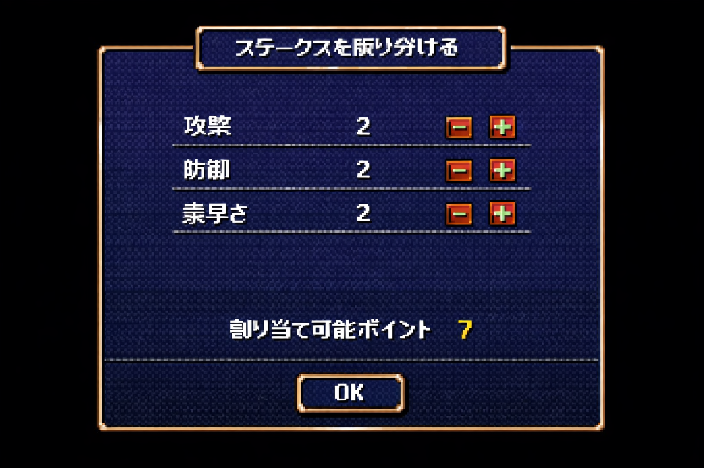
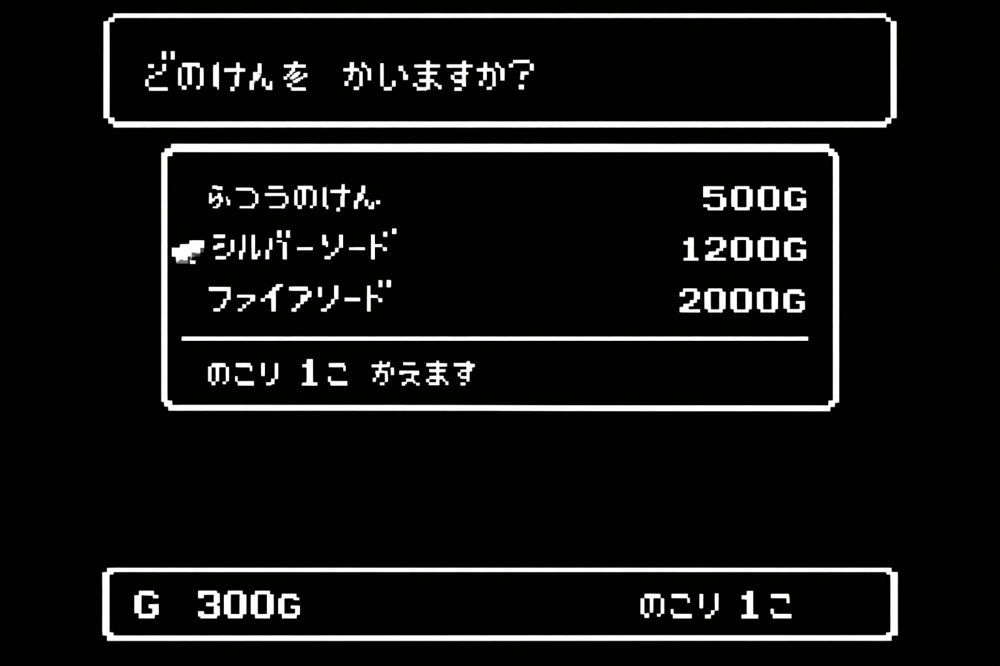

最初は防御重視
最初の敵に対しては基本的にアイテム等で攻撃力を上げなくても倒せるようになっています。 なので、最初期は攻撃にステータスを振らずのちのちに必要になっていく防御ステータスに振るべきです。 攻撃はそのあとに振っても遅くはありません。


おすすめのアイテム
第一章の攻略で使えるアイテムをここで書いていきます
剣 ふつうの剣
第一章で手に入る剣は現実的にみるとこの剣だけになります(一章の敵を大量にたおせば少し高い剣を買うことができますがそれは大変すぎるため無しとします）

防具
普通の防具 以下略